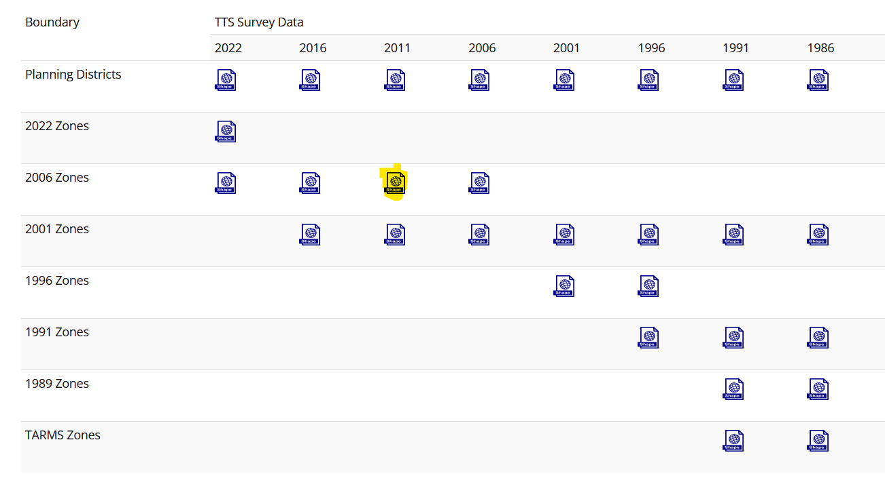
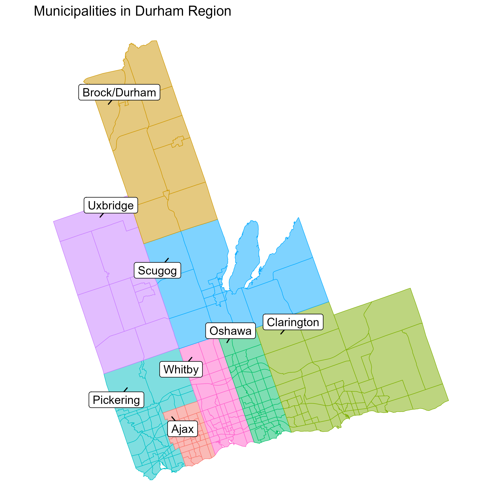
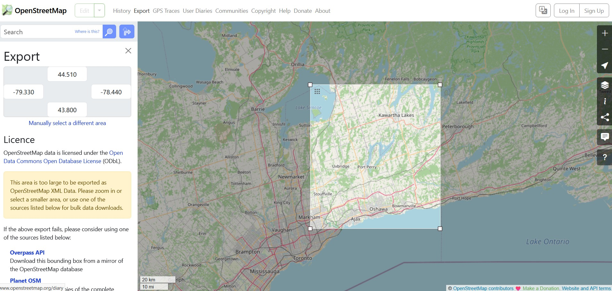

This post is part of the Case Study: Simulating Durham Region. In this case study, we get the relevant data and road network, create Traffic Analysis Zones (TAZ)s, generate trips based on origin-desitination data, create routes, and run simulation.
This post covers:
Get Data: Origin-Destination Trip Matrix and Zone shapefile from UToronto’s Transportation Tomorrow Survey (TTS) project
We use the zone boundaries relevant to the 2011 trip matrix.

This file contains a column pd that includes planning districts and also corresponding polygon geometries. According to the 2011 TTS Data Guide, pd of 17-24 belong to the Durham region which is the area of interest in our case-study. Therefore, we dissolve the original shapefile into 8 polygons only:
Click to see the code
# This is R code.library(sf)library(dplyr)foo <-st_read("data/tts_2006zn_shp/tts_2006zn.shp")foo <-st_make_valid(foo)durham <- foo %>%filter(pd %in%17:24)durham_taz <- durham %>%group_by(pd) %>%summarise(geometry =st_union(geometry), .groups ="drop") %>%st_cast("POLYGON") %>%mutate(area =st_area(geometry)) %>%group_by(pd) %>%slice_max(area, n =1) %>%ungroup() %>%select(-area) %>%st_simplify(dTolerance =100, preserveTopology =TRUE)st_write(durham_taz, "data/durham_taz/durham_taz.shp", delete_layer =TRUE)## For bounding box:durham_taz |>st_transform(4326)

Download map from OSM
OSM lets you download road network by selecting a desired area or providing a bounding box. For the Durham region zone boundaries, the bounding box is:
Click Export from the navigation bar on the OSM page, enter the bounding box coordinates and then click the Overpass API below to download the network. The file will be downloaded as map, rename it as map.osm.

Convert map.osm to SUMO compatible map.net.xml
Make sure your current working directory is sumo_workshop. Now run this in the powershell terminal:
The only required command here is netconvert --osm data/osm/map.osm -o module1/03-osm/map.net.xml. The other options used here are described as follows:
Flag
Description
--osm data/osm/map.osm
Input: Reads the OpenStreetMap network from the specified file (map.osm).
-o module1/03-osm/map.net.xml
Output: Writes the generated SUMO network to the specified file (map.net.xml).
--ramps.guess
Processing: Enables the guessing and marking of highway on-ramps and off-ramps.
--junctions.join
Processing: Joins junctions that are very close to each other, which is often recommended for OSM imports to simplify the network.
--junctions.join-dist 15
Processing: Sets the maximal distance (in meters) for joining junctions. The default is 10; this sets it to 15.
--tls.guess-signals
TLS Building: Interprets nodes surrounding an intersection as signal positions for a larger traffic light system. This is a typical pattern for OSM-derived networks.
--tls.discard-simple
TLS Building: Does not instantiate traffic lights at simple, geometry-like nodes that are loaded from non-plain-XML formats (like OSM).
--tls.join
TLS Building: Tries to cluster traffic-light-controlled nodes that are close together into a single logic.
--tls.default-type static
TLS Building: Sets the default traffic light algorithm for nodes with unspecified types to static (fixed-time control).
Input: Reads XML type definitions from the specified file. This typemap is crucial for mapping OSM highway types to SUMO edge attributes like speed and number of lanes.
--output.street-names
Output: Includes street names in the output .net.xml file if they are available in the input data.
--output.original-names
Output: Writes the original names (e.g., from OSM) as a parameter in the output file.
--keep-edges.by-vclass passenger
Edge Removal: Only keeps edges that allow the vehicle class passenger. All other edges (e.g., railways, pedestrian paths) are removed from the network.
--remove-edges.isolated
Edge Removal: Removes edges that are isolated and not connected to the rest of the network.
--geometry.remove
Processing: Replaces nodes that only serve to define edge geometry with geometry points, effectively joining the edges to remove unnecessary nodes.
--geometry.max-segment-length 50
Processing: Splits long geometry segments so that no segment is longer than 50 meters. This can improve accuracy and visual appearance.
--edges.join
Processing: Merges edges that connect the same two nodes and are geometrically close to each other.
--junctions.corner-detail 5
Junctions: Generates 5 intermediate points to smooth out the corners of intersection shapes.
--no-internal-links
Junctions: Omits the creation of internal links within junctions. This simplifies the network but prevents vehicles from stopping inside the junction.